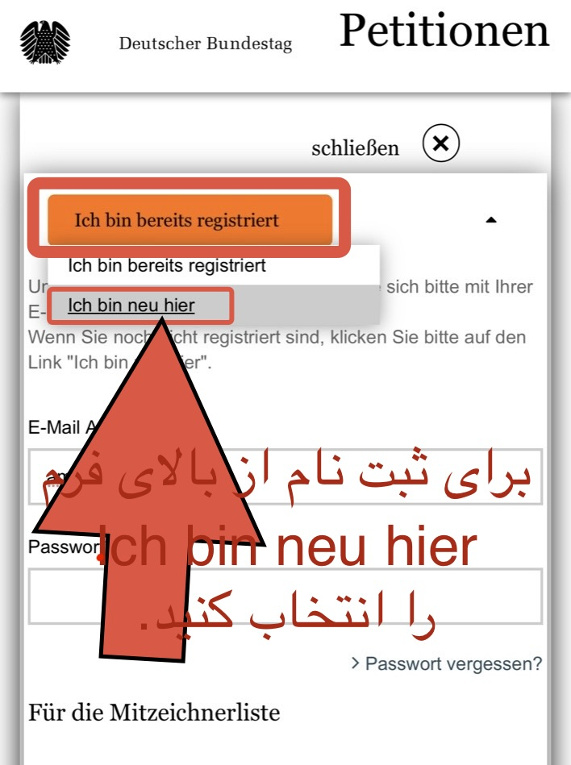
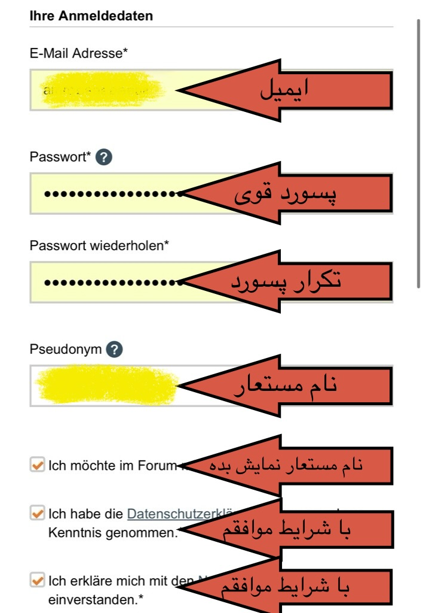
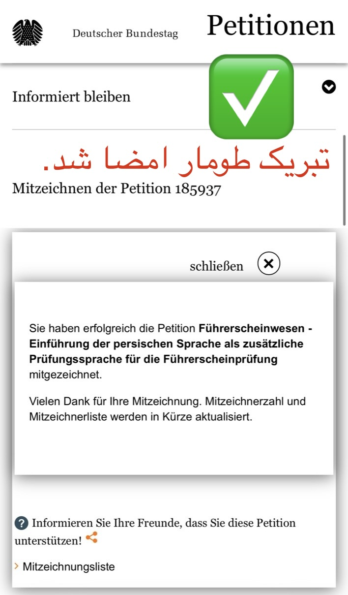

افزودن زبان فارسی به آزمون تئوری گواهینامه آلمان
پتیشن رسمی Bundestag را امضا کنید؛ در همین صفحه آموزش تصویری، کلمات کلیدی کامل و پاسخ به سوالات پرتکرار را میبینید.
آموزش تصویری امضای پتیشن




آموزش تصویری (ویدیو)
کلمات کلیدی مهم (فارسی)
فهرست گسترده برای پوشش حداکثری سئو (نمونهٔ منتخب؛ قابل توسعه):
سوالات پرتکرار
چرا امضای من مهم است؟
رسیدن به ۵۰هزار امضا توجه ملی را جلب میکند تا اضافهشدن زبان فارسی بررسی و پیگیری شود.
آیا این صفحه رسمی دولت است؟
خیر؛ این صفحه مستقل است و فقط به وبسایت رسمی ePetitionen (Bundestag) لینک میدهد.
میتوانم ناشناس امضا کنم؟
بله؛ نمایش با «Mitzeichner-Nummer» ممکن است.
هزینهای دارد؟
خیر؛ امضا کاملاً رایگان است.
Petition: Persisch als Sprache in der theoretischen Führerscheinprüfung
Unterstützen Sie die offizielle Bundestag-Petition. Auf dieser Seite finden Sie eine visuelle Anleitung, umfangreiche Suchbegriffe und Antworten auf häufige Fragen.
Schritt-für-Schritt Anleitung
Video (YouTube)
Wichtige Suchbegriffe (Deutsch)
Erweiterte Liste für maximale Auffindbarkeit (auszugsweise; beliebig erweiterbar):
FAQ
Warum ist meine Mitzeichnung wichtig?
Ab 50.000 Mitzeichnungen erhält das Anliegen bundesweite Beachtung.
Ist diese Seite offiziell?
Nein. Es handelt sich um eine unabhängige Informationsseite mit direktem Link zur offiziellen ePetitionen-Seite.
Kann ich anonym mitzeichnen?
Ja, Sie können mit Ihrer Mitzeichner-Nummer gelistet werden.
Petition: Add Persian (Farsi) to Germany’s Theory Driving Test
Support the official Bundestag e-petition. This page includes a visual tutorial, comprehensive keywords, and a practical FAQ.
How to Sign — Visual Guide
Tutorial Video
Important Keywords (English)
Extended list for maximum discoverability (sample; expandable):
FAQ
Why does my signature matter?
Once 50,000 signatures are reached, the issue gains national visibility and can be formally considered.
Is this an official government page?
No. This is an independent information page linking to the official Bundestag ePetitionen site.
Can I sign anonymously?
Yes, you can appear publicly under your “Mitzeichner” (supporter) number only.